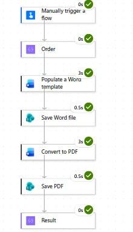

- Power Automate
- Level 7 · Files, email and documents · 5 of 7
Word templates and PDF conversion
Letters, certificates and confirmations usually follow a fixed layout with a few changing values. The Word Online (Business) connector fills a Word template with those values and converts the result to PDF, ready to email or store.
From template to PDF



How the template works
A template is a normal .docx file with content controls where the values go. In Word desktop, turn on the Developer tab, place a Plain Text Content Control for each value, and give each one a clear title in Properties (LetterDate, CustomerName, OrderId, Amount). When you pick the file in Populate a Microsoft Word template, those titles appear as input boxes.
| Action | Input | Output |
|---|---|---|
| Populate a Microsoft Word template | Template file and a value per control | The new document's content (not yet saved) |
| SharePoint Create file | A name ending in .docx and the content from above | The saved Word file |
| Convert Word Document to PDF | The saved Word file | PDF content to save or attach |
The connector is premium, so the flow needs a Power Automate Premium (or Process) licence.
New to this? Start from the basics optional
Content control: a marked box in a Word document that a program can fill in. Word desktop shows them on the Developer tab.
.docx vs .dotx: save the template as a normal .docx. The action works with .docx files.
Build it step by step optional
- In Word desktop, write the letter and insert a Plain Text Content Control for each value. Give each a title.
- Save it as .docx in a SharePoint library.
- Add Populate a Microsoft Word template, select the file, and fill each box with dynamic content.
- Add SharePoint Create file with a unique name, such as
concat('letter-', variables('OrderId'), '.docx'). - Add Convert Word Document to PDF on the saved file, then Create file again with a .pdf name, or attach it to an email.
Common mistakes
- Content controls that aren't plain text (rich text, date picker). Use plain text and format the value in the flow.
- Converting before saving. Convert to PDF needs a saved Word file.
- Re-using one output name, so each run overwrites the last letter.